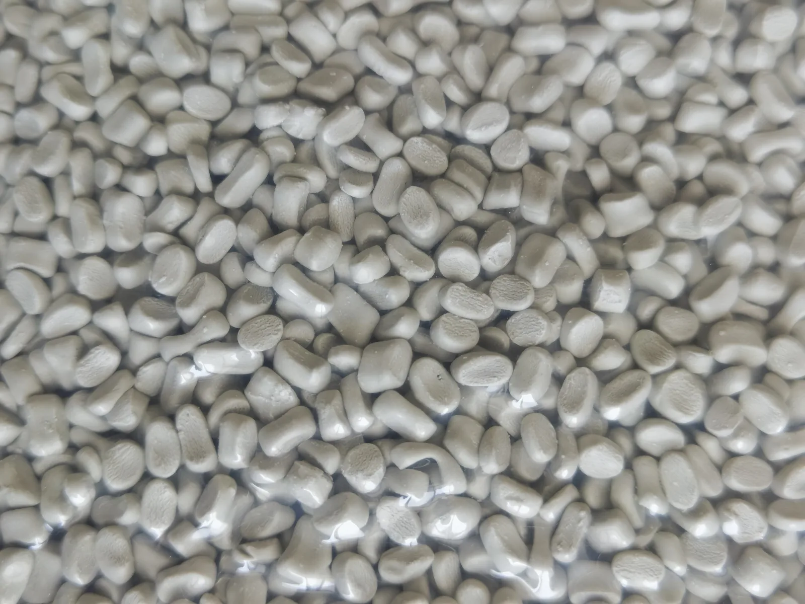
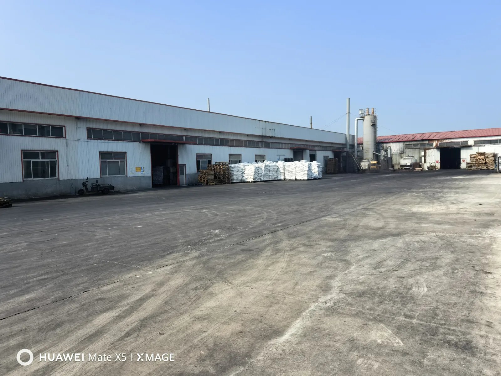

Selection guide
Masterbatch for film and blown film
Work through resin, carrier, film structure, thickness, let-down ratio and the conditions needed for a comparable trial.
Read the film guideRead practical guides for material selection, supplier review and production troubleshooting. Use the buyer tools below when the requirement is ready for an RFQ or document review.
Three entry points for the questions that usually come before a reliable material decision.
Selection guide
Work through resin, carrier, film structure, thickness, let-down ratio and the conditions needed for a comparable trial.
Read the film guide
Diagnostic guide
Collect a control sample and production records before assigning a cause to specks, streaks or poor dispersion.
Review the diagnostic steps
Supplier review
Check the supplier entity, document scope, sample plan, batch controls and quotation basis with one working checklist.
Review a supplierUse these pages when the buying question is clear and the next step is an inquiry, a sample or a document review.
Preparation
Bring the base resin, process, final product, target, quantity and document needs into one reviewable brief.
Open the checklistQuestions
Find short answers on product range, samples, technical files and application review.
Open Buyer FAQDocuments
Request TDS, SDS/MSDS, COA and compliance-related files for exact grades and intended uses.
Request documentsMove from the buyer guidance to the material family closest to the resin, process and final product.
Send the resin, process, final product and target. The team will review the product direction and document scope by exact grade and application.